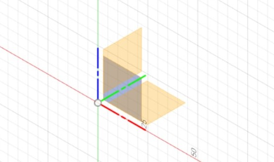
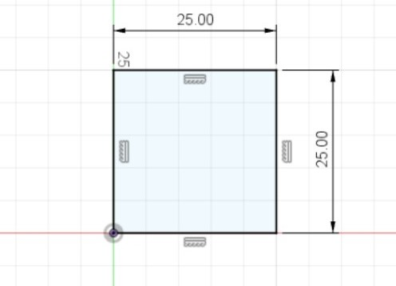
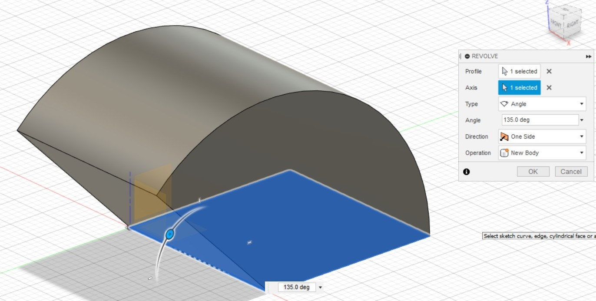
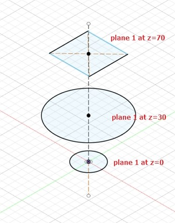
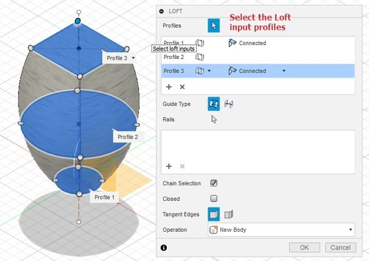

CAD or CADD (Computer Aided Design and Drafing) are a set of digital vector tools used to design objects on your computer and simulate and analyse them without actually building or fabricating the actual object. Once designed and tested, they can then be fabricated by sending the design into a 3D printers or computer cutting. CAD is often used in Electronic Design Automation, Architectural & Building services as well as Product design & manufacturing
For CAD, I used Fusion 360 which is an Integrated CAD, CAM, and CAE software. The commands of the app is similar to Autodesk Inventor which I learnt in the module Computer Aided Design.
Interface
In Fusion, to move the camera around, hold the MMB to shift the camera, and hold MMB+Shift to pan the camera.

- Application Bar: The save, undo and redo function is found is this bar.
- Data Panel: Houses all your design files that you made with Fusion 360, Allows creation of new project.
- Profile and Help: Allows settings of Preferences. Ensure that you have the Z-axis pointing up and units of measurements is in mm
- Toolbar: Contains essential command set in each area that you are working on
- Browser: Lists the objects in your design. An object is made out of components, which is made out of bodies and sketches. You can control the visibility of each part of the object.
- ViewCube: Shows the viewing angle of the camera and the orientation of the object. You can set the camera to the Home view from here
- Canvas and Marking menu: The work surface which houses your object.
- Navigation Bar and Display Settings: Sets the settings for the view and camera.
- Timeline: Shows order of operations. Allows editing and manipulation of previously made features and operations.
The Basics
To start modeling in Fusion 360, a 2D Sketch must first be constructed on one of the 3 provided planes.
You then can construct a 2D view of what your object would look like, and give relevant dimensions
 After creating the sketch, you can choose to extrude it to create a 3 Dimensional object. There are 3 types of extrusion:
New Body - creates a new body
Join - joins extruded body with the existing body
Cut - uses the extrusion to remove unwanted parts. To change the direction of the extrusion, just add a negative in front of the distance of extrusion.
You can also choose to Revolve instead of extruding, which requries you to select an axis to revolve the sketch around. Revolution can be Partial, based on angle (which I used with an angle of 135 degrees), or a Full 360
Lofting
Lofting creates a closed profile using several sketches made in differet planes.
When using the loft command, select the profiles you want to use to create the 3D body.
Create
If our model is geometric (made up of a certain shape) we can directly create the object using Box, Cylinder, Sphere, Torus, Coil and Pipe. These models can be mathematically defined, hence, easy to create using Fusion 360. We could use these and duplicate and manipulate them to our purpose. Fusion 360 provides commands for this action
- Pattern: Circular - Duplicate an object around an axis, Rectangualar - Duplicate an object following a rectangular rule
- Mirror: Mirror bodies and features for symmetrical objects about a plane.
- Thicken: Add thickness to object, creating models from surfaces
- Boundary Fill - fills in bound areas
These actions can apply to Faces, Bodies, Components or Features that were constructed by sketches as well.
Modify
Modification commands changes the composition of faces, bodies or components.
- Press Pull: Similar to extrude however, it can apply to a single face or faces, producing different results
- Fillet: Round of a corner by a certain radius
- Chamfer: Smooth down a surface using a bevel
- Shell: Hollow a body, leaving one of the sides intact
- Scale: Modify an object by changing the size based on a ratio
- Combine: Combine 2 components in different ways either by merging, cutting or removing
- Move/Copy: Move or copy a 3D object
Canvas
Fusion allows importing of images in order to help create a model based on the shape in the image. This can be done by Insert > Canvas. From there, you can choose the image from your computer, and select the plane you would want to project the image. Fusion would also allow you to change the opacity of the image and the size of the image.
Parametric Modelling
Parametric modelling is a function in Fusion which allows you to define dimensions in the model by variables and functions. These variables are defined in the Modify > Change Parameters. In the parameters box you define the name of the parameter, the type of the parameter e.g. mm, a value (which can be changed) and a comment to identify the parameter created. To use the variables, when typing out a dimensions, you can refer the selected dimension to the variable using the variable name. The variable can also be manipulated with mathematical equations, such as the variable/2 to divide the value of the variable by 2.
Assembly Modelling
You can combine bodies or components to form a new object. This allows you to create smaller parts (components) and then assemble them to form another object or component for further assemblies. Assembly modelling allows you to check your model before manufacture. In order to create a new component, right click the object in the browser, and select new component. In order to make sketches on a different component, right click the component in the browser, and select Activate Component.
Assemble > Joint allows you to position different components relative of one another by selecting the 2 component's geometry and specify the joint alignment, offset, angle etc.